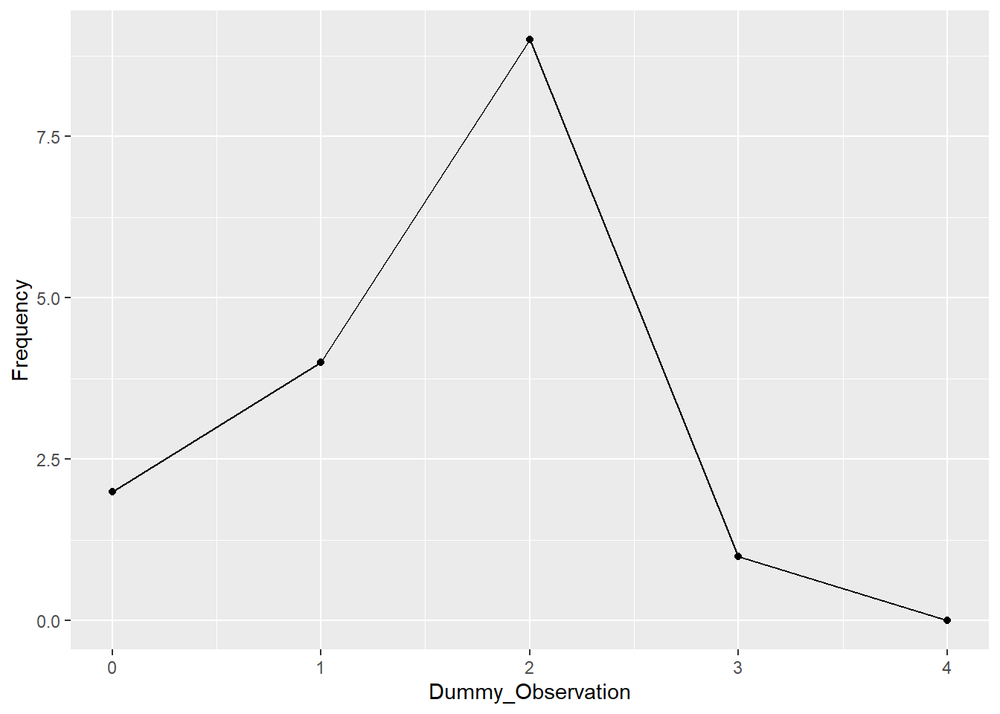
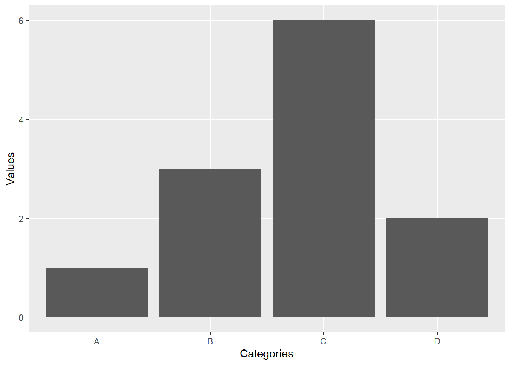

if (!require("tidyverse")) {
install.packages("tidyverse")
library(tidyverse)}
if (!require("ggplot2")) {
install.packages("ggplot2")
library(ggplot2)}2.1 Homework
Setup
Before running any future code, run the following chunk. This will check if the required packages are installed, load them if they are, and install them if they are not.
Functions
To work through the following exercises, copy the code block contents required for the given problem to the code block provided and enter the data the problem gives.
Stem-and-leaf
Using the built in stem() command, we can create basic stem-and-leaf plots
x <- c(11, 12, 13, 15, 21, 22, 30) # The data, change me!
stem(x, scale=1) # Change the scale argument if the data is too compressed or stretched.
The decimal point is 1 digit(s) to the right of the |
1 | 123
1 | 5
2 | 12
2 |
3 | 0Line graph
We could use the built in plot() function, but this is a good place to introduce the more streamlined and attractive plots given by ggplot()
# For a problem, change the data in "data". When changing the names, you should update them in ggplot as well.
data <- data.frame("Dummy_Observation" = c(0,1,2,3,4),
"Frequency" = c(2,4,9,1,0))
ggplot(data, aes(x = Dummy_Observation, y = Frequency)) +
geom_line() +
geom_point()
Bar Graph
Similarly, there is a built in bar graph to R, but the one provided by ggplot() is more functional.
# For a problem, change the data in "data". When changing the names, you should update them in ggplot as well.
data <- data.frame("Categories" = c("A", "B", "C", "D"),
"Values" = c(1,3,6,2))
ggplot(data, aes(x = Categories, y = Values)) +
geom_col()
Problems
Problem 1
Create a stem-and-leaf plot of the miles-per-gallon ratings for 30 cars shown: 19, 19, 19, 20, 21, 21, 25, 25, 25, 26, 26, 28, 29, 31, 31, 32, 32, 33, 34, 35, 36, 37, 37, 38, 38, 38, 38, 41, 43, 43
Problem 2
Create a stem-and-leaf plot of the height in feet of 25 trees shown: 25, 27, 33, 34, 34, 34, 35, 37, 37, 38, 39, 39, 39, 40, 41, 45, 46, 47, 49, 50, 50, 53, 53, 54, 54
Problem 3
Create a stem-and-leaf plot of the prices of different laptops at an electronics store, first rounding each value to nearest 10: 249, 249, 260, 265, 265, 280, 299, 299, 309, 319, 325, 326, 350, 350, 350, 365, 369, 389, 409, 459, 489, 559, 569, 570, 610
x <- c(1) # input data here
x10 <- round(x/10,0)*10 # rounds to nearest 10
# Use x10 in the stem() function.Problem 4
Create a stem-and-leaf plot of the daily high temperatures in a town for one month: 61, 61, 62, 64, 66, 67, 67, 67, 68, 69, 70, 70, 70, 71, 71, 72, 74, 74, 74, 75, 75, 75, 76, 76, 77, 78, 78, 79, 79, 95
Problem 5
Construct a line graph for the following data: In a survey, 40 people were asked how many times they visited a store before making a major purchase. Number of times in Store: 1, 2, 3, 4, 5 Frequency: 4, 10, 16, 6, 4
Problem 6
Construct a line graph for the following data: In a survey,people were asked how many years it has been since they purchased a mattress. Years since last purchase: 0, 1, 2, 3, 4, 5 Frequency: 2, 8, 13, 22, 16, 9
Problem 7
Construct a line graph for the following data: Several children were asked how many TV shows they watch each day. Number of TV shows: 0, 1, 2, 3, 4 Frequency: 12, 18, 36, 7, 2
Problem 8
The students in Ms. Ramirez’s math class have birthdays in each of the four seasons. Data below shows the four seasons, the number of students who have birthdays in each season, and the percentage of students in each group. Construct a bar graph showing the number of students.
Seasons: “Spring”, “Summer”, “Autumn”, “Winter” Number of Students: 8, 9, 11, 6 Proportion of population: .24, .26, .32, .18
Problem 9
David County has six high schools. Each school sent students to participate in a county-wide science competition. Data below shows the percentage breakdown of competitors from each school and the percentage of the entire student population of the county that goes to each school. Construct a bar graph that shows the population percentage of competitors from each school.
High School: “Alabaster”, “Concordia”, “Genoa”, “Mocksville”, “Tynneson”, “West End” Science Competition Population: .289, .076, .121, .185, .242, .087 Overall Student Population: .086, .232, .150, .143, .101, .288